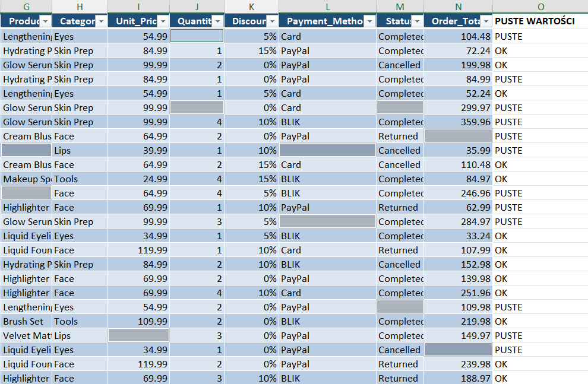
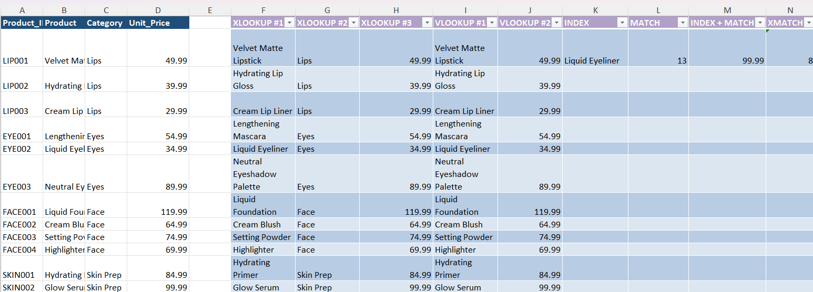
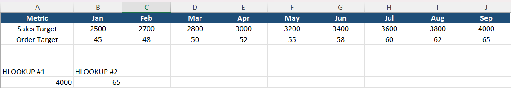
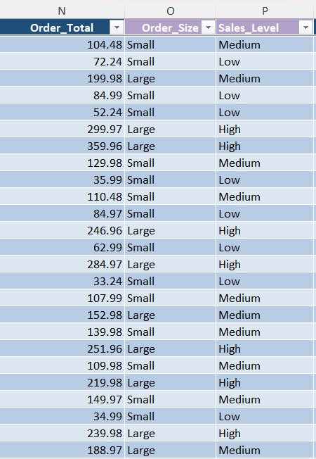
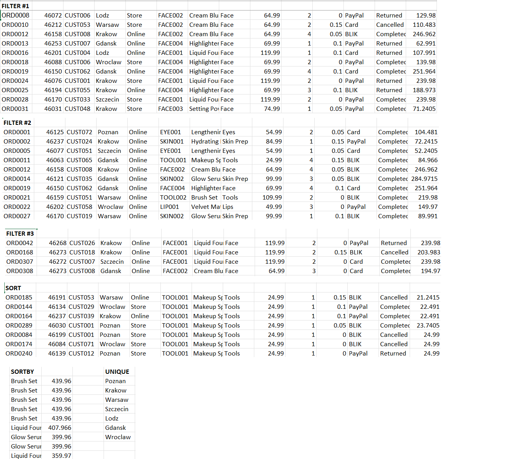
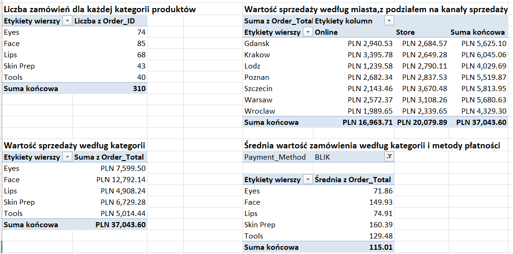
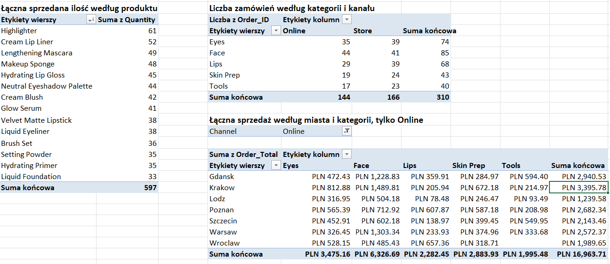
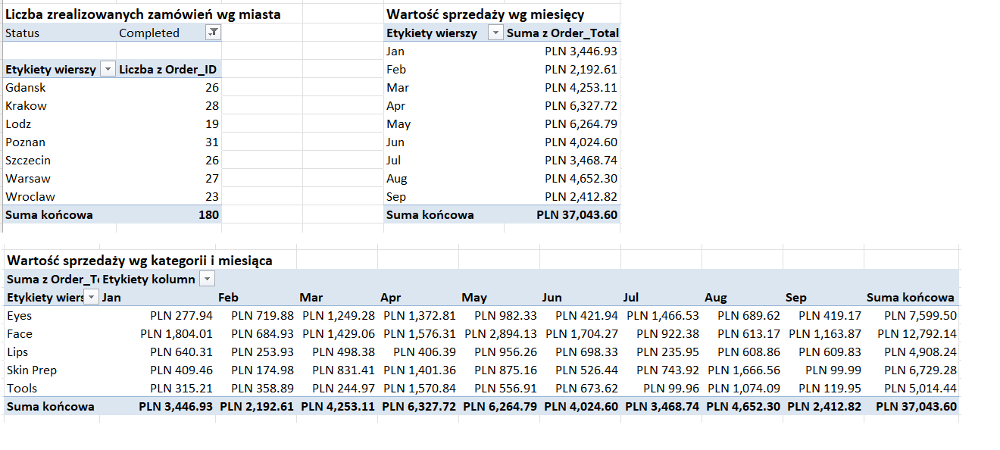

Analiza danych sprzedażowych w Excelu
01 — Kontrola jakości danych

Kontrola kompletności danych poprzez wyróżnienie pustych komórek oraz dodanie kolumny statusu, która automatycznie identyfikuje wiersze zawierające braki danych.
02 — Funkcje wyszukiwania i odwołań

Wykorzystanie funkcji XLOOKUP, VLOOKUP, INDEX i MATCH do wyszukiwania nazw produktów, kategorii i cen jednostkowych na podstawie identyfikatorów produktów. Dodatkowo zastosowano obsługę nieodnalezionych identyfikatorów oraz połączenie INDEX i MATCH do wyszukiwania ceny konkretnego produktu.
03 — Wyszukiwanie poziome (HLOOKUP)

Wykorzystanie funkcji HLOOKUP do pobierania miesięcznych celów sprzedażowych i celów dotyczących liczby zamówień na podstawie skrótów nazw miesięcy.
04 — Funkcje logiczne (IF, IFS)

Klasyfikacja zamówień na podstawie ich wartości z wykorzystaniem funkcji IF i IFS. Zamówienia przypisano do kategorii wielkości oraz poziomów sprzedaży zgodnie z określonymi progami wartości.
05 — Filtrowanie, sortowanie i tablice dynamiczne

Wykorzystanie funkcji FILTER, SORT, SORTBY i UNIQUE do tworzenia dynamicznych zestawień sprzedaży. Przygotowano widoki danych według kategorii produktów, statusu zamówienia, kanału sprzedaży, daty i wartości transakcji, a także posortowane zestawienia zamówień oraz listę unikalnych miast.
06 — Tabele przestawne: analiza sprzedaży i zamówień

Analiza liczby zamówień i wartości sprzedaży według kategorii produktów, wartości sprzedaży według miasta i kanału sprzedaży oraz średniej wartości zamówienia w podziale na kategorię produktu i metodę płatności.
07 — Tabele przestawne: produkty i kanały sprzedaży

Analiza łącznej liczby sprzedanych sztuk według produktów, liczby zamówień według kategorii produktów i kanału sprzedaży oraz wartości sprzedaży według miasta i kategorii z uwzględnieniem wyłącznie zamówień online.
08 — Tabele przestawne: trendy sprzedaży w czasie

Analiza liczby zrealizowanych zamówień według miasta oraz trendów sprzedaży w czasie. Zestawienia przedstawiają wartość sprzedaży według miesięcy oraz w podziale na kategorię produktów i miesiąc.